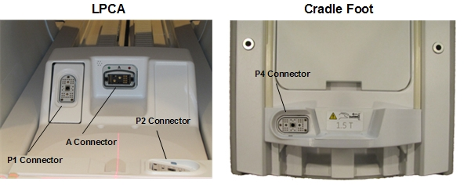
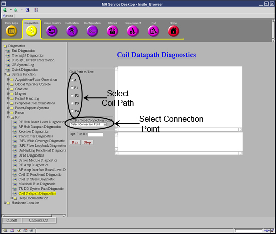
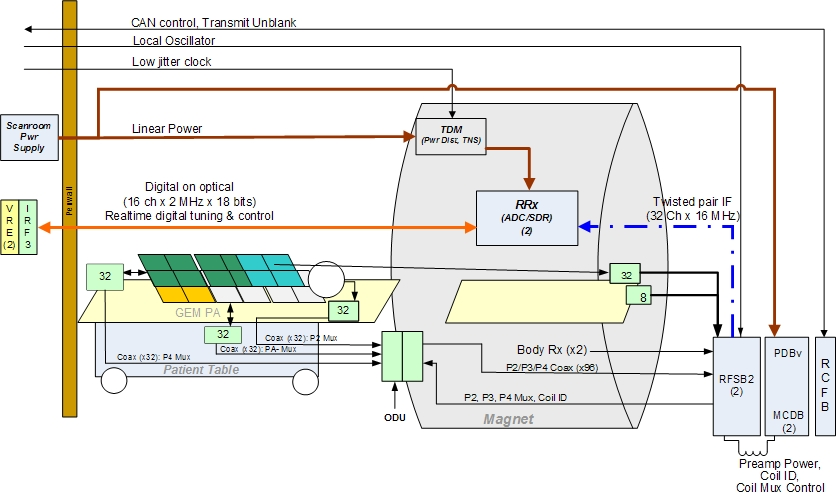
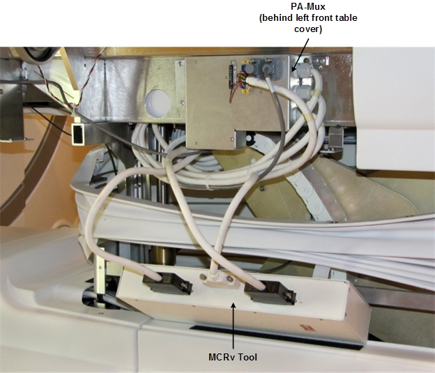

GE Exclusive Use Only
Direction 5670006, Rev# 1
Discovery MR750w GEM Service Methods
Module Version 4.0, Version Date 10/13/11
GE Exclusive Use Only |
Diagnostic Link
Diagnostics >> System Function >> RF >> Coil Datapath Diagnostics
Purpose
The Coil Datapath Diagnostic (CDD) tests the signal paths between the coil connectors and the coil inputs to the RF Hub. It also tests portions of the RF Hub that are not covered by internal board level or datapath diagnostics. The test uses the MCRv tool.
There are 2 MCRv tools, one for 1.5T, another for 3.0T systems. The difference between the tools is the controller with oscillators for the different field strengths.
Physically, the MCRv tool is a hardware module that emulates a coil. This module must be connected to the coil inputs or to other points along the coil cable path before starting the diagnostic. The MCRv tool generates known test signals and provides known loads that the diagnostic can measure to verify the correct connectivity between the points where the tool is connected and the rest of the system. The MCRv tool is supplied with a variety of cables that allow you to attach the tool to various points along the receive path.
The ports where the MCRv tool can be connected are:
P1 and A connector in the LPCA.
P2 and P4 in the table.
PA-Mux under the left side table covers.
The RF Switch Board (RFSB2).
The tests are organized by coil connector type starting with the pathways/connectors that are farthest away (the longest signal paths). There are 3 different paths by connector type shown in the columns of the table below. Note that the longest signal paths are at the top of the column. Typically, you will want to start testing with the coil connector.
Table 1: Cable Descriptions
| Cable Description | Quant | Approx. length | Easy Label |
| A port adaptor | 1 | 600mm (~23.6”) | C1 |
| 37 pin sub-D, Male-Fem | 1 | 600mm (~23.6”) | C2 |
| 8w8 Male-Fem | 1 | 600mm (~23.6”) | C3 |
| P port adaptor | 1 | 600mm (~23.6”) | C4 |
| 25 pin sub-D, Male-Fem | 1 | 1000mm (~39.4”) | C5 |
| 16w16, Male-Fem | 2 | 1000mm (~39.4”) | C6 |
| 16w16, Male-Male | 2 | 1000mm (~39.4”) | C7 |
Requirements
3.0T MCRv Tool Kit-Part # 5182417-2
Test Sequence
Launch the Service Desktop Manager and select the Diagnostics tab from the Common Server desktop.
Under the Service Desktop Manager, select [System Function], [RF], and [Coil Data Path Diagnostics].
In the Coil Path to Test list, select a Coil Path to Test radio button. See Illustration 2.
In the MCRv Tool Connection Point drop-down list, choose a connection point, and then physically connect the MCRv tool to the appropriate connection point. See the following illustration.
Illustration 1: Port Locations

To specify a Custom Log Filename, enter text in the Opt. File ID field.
Click the Run button.
Illustration 2: Coil Datapath Diagnostic Main Screen

Expected Results
Illustration 3: Example of Passed Test

Illustration 4: Example of Failed Test

Test Setup Instructions and Troubleshooting
Use the table below for instructions on how to set up each test.
| NOTE: | To validate the system, test each port, starting at A in the top row, and work from left to right. To troubleshoot, start in the column of the failing port and work your way down that respective column to resolve the failure. |
Illustration 5: MCRv Tool

Table 2: Coil Connector Type Tests
| A | P1 | P2 (in table) | P4 (in table) | PA-MUX (in table) |
| Section 4.3 - 'A' Coil Connector | Section 1.2 - 'P' Coil Connector | Section 1.2 - 'P' Coil Connector | Section 1.2 - 'P' Coil Connector | Section 2 - PA-Mux Interface |
| Section 1.1 - 'A' Cable Chain | - | - | - | - |
| Section 3.1 - 'A' RF Switch Board | Section 4.2 - 'P1' RF Switch Board | Section 4.3 - 'P2' RF Switch Board | Section 4.4 - 'P4' RF Switch Board | Section 4.5 - 'PA-Mux' RF Switch Board |
Illustration 6: Receive Chain Block Diagram

There are five coil connectors. Two coil connectors are accessed through the LPCA: A, P1. In addition, P2, P4, and the PA-Mux are on the table.
| NOTE: | P2 and P4 are connection sockets on top of the cradle. The PA-Mux multiplexer box is located behind the left side covers of the table. |
The coil connector test validates each connector separately by connecting the proper adaptor cable to the MCRv tool and running the indicated test below. The test validates both the signal (RF) path and the control (DC) path for that connector.
| NOTE: | A [Pass] in the test means that all receive circuitry is OK and you can quit. |
| ||||
| The table must be electrically docked for the tests to function correctly. | ||||
Refer to the connection instructions below to run an associated test:
Attach one end of the C1 ('A' port adaptor cable) to the 'A' Connector.
Attach other end to connectors J1 and J5 of the MCRv tool.
If the test fails, first check that the connections are firmly seated, ensure the screws are properly tightened, and then rerun the test. If the test fails again, consider running tests in Section 3 - 'A' Cable Chain Interface.
Attach one end of the C4 ('P' port adaptor cable) to the proper 'P' Connector.
Attach other end to connectors J2, J3 and J4 of the MCRv tool. Note that J3 is connected to 16W16 cable labeled RF Channels 1-16 and that J4 is connected to 16W16 cable labeled RF Channels 17-32.
If a test fails for P1, P2, or P4, first check that the connections are firmly seated, ensure the screws are properly tightened, and then rerun the test. If the test fails again, consider running tests located in Section 4 - 'P' RF Switch Board.
If a test fails for the PA-Mux, first check that the connections are firmly seated, ensure the screws are properly tightened, and then rerun the test. If the test fails again, consider running tests located in Section 2 - PA-Mux Interface.
This diagnostic tests connectivity from the PA-Mux.
Illustration 7: MCRv Connection to PA-Mux

Remove the left side cover of the table to access the PA-Mux.
Disconnect J3 from the PA-Mux and connect it to J2 of the MCRv tool.
Disconnect J1 from the PA-Mux and connect it to J3 of the MCRv tool.
Disconnect J2 from the PA-Mux and connect it to J4 of the MCRv tool.
This diagnostic tests connectivity of the Cable Chain Interface in the magnet bore.
Attach C2 (37-pin sub-D Male-Female) to J2 of 'A' Cable Chain Panel (PED-LPCA) and to J1 of MCRv tool.
Attach C3 (8w8 Male-Female) to J1 of 'A' Cable Chain Panel (PED-LPCA) and to J5 of MCRv tool.
If the previous test fails, first check that the connections are firmly seated, ensure the screws are properly tightened, and then rerun the test. If the test fails again, then consider running tests located in Section 4 - RF Switch Board
Attach C2 (37-pin sub-D Male-Female) to RFCB J6 in Slot 11 to J1 of the MCRv tool.
Attach C3 (8w8 Male-Female) from RFSB2 A1/A2 in Slot 1 to J5 of the MCRv tool.
Attach C5 (25-pin sub-D Male-Female) to RFCB J1 in Slot 11 to J2 of the MCRv tool.
Attach C7 (16w16 Male-Male) to P1 of the RFSB2 in Slot 1 and to J3 of the MCRv tool.
Attach C7 (16w16 Male-Male) to P1 of the RFSB2 in Slot 2 and to J4 of the MCRv tool.
Attach C5 (25-pin sub-D Male-Female) to RFCB J2 in Slot 11 to J2 of the MCRv tool.
Attach C7 (16w16 Male-Male) to P2 of the RFSB2 in Slot 1 and to J3 of the MCRv tool.
Attach C7 (16w16 Male-Male) to P2 of the RFSB2 in Slot 2 and to J4 of the MCRv tool.
Attach C5 (25-pin sub-D Male-Female) from RFCB J4 in Slot 11 to J2 of the MCRv tool.
Attach C7 to MCRv tool J3, but the connection to the RFSB2 and the associated connector number is dependent on channel number selected and will be displayed by the help popup when the channel number is selected.
Attach C5 (25-pin sub-D Male-Female) from RFCB J3 in Slot 11 to J2 of the MCRv tool.
Attach C7 to the MCRv tool J3, but the connection to the RFSB2 and the associated connector number is dependent on channel number selected. This information will be displayed in a popup window when the channel number is selected.
| NOTE: | Depending on which parts of the diagnostic fail, the RFSB2, the MCDB, the RF Hub backplane (unlikely), or something upstream could be defective. Run additional RF Hub diagnostics and/or swap MCDBs to help isolate bias failures to the switch board or driver board. |